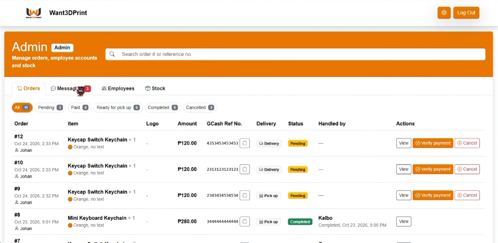
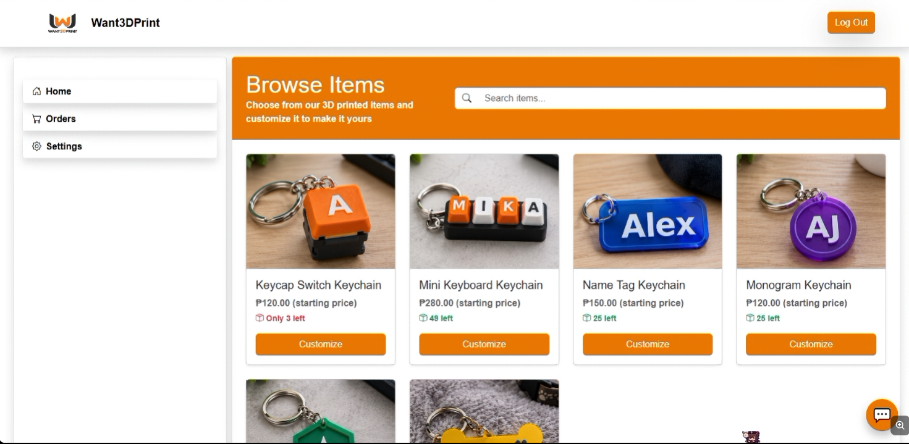

Overview
Want.3D.Print is a Software Engineering 2 academic project developed as part of my BS Information Technology studies at City College of Calamba. The project proposes a web-based system that allows customers to customize keychains and submit orders through an organized ordering process.
Problem
The project focuses on organizing the customization and ordering process for personalized keychains. It aims to provide a structured way for customers to specify their preferred designs and for the business to manage submitted orders.
Proposed Solution
The proposed system provides a web-based platform for keychain customization and order management. Customers can specify product options, submit orders, and receive information about pickup or delivery.
The proposed scope includes manual GCash payment processing, where customers scan a QR code and provide their payment reference number for employee confirmation. The system does not include integrated online payment processing.
Key Features
- Product customization: Customers can specify keychain color, size, logo or image, text or font, and quantity.
- Order submission: Customers can submit their customized keychain orders.
- Order management: Employees can manage customer orders.
- Pickup and delivery notifications: Customers can receive updates regarding their orders.
- Manual payment confirmation: The proposed process uses GCash QR payment and employee verification of the reference number.
Scope and Limitations
The project focuses on customization and order management for personalized keychains. It includes order submission, pickup scheduling, employee order management, and pickup/delivery notifications.
Integrated online payment processing is not included. Payment confirmation is handled manually. This project was completed as an academic proposed system and was not commercially deployed.
My Contribution
My responsibilities included research and documentation, system analysis and diagram preparation, testing and evaluation, and project coordination. I contributed to organizing the project requirements and documenting the proposed system throughout the Software Engineering 2 project.
What I Learned
Through this project, I gained experience in system analysis, technical documentation, and project coordination. I also learned the importance of identifying system requirements, organizing project activities, and evaluating a proposed system based on its intended functionality.
Project Screenshots
Actual interface screenshots from the proposed Want.3D.Print system.

